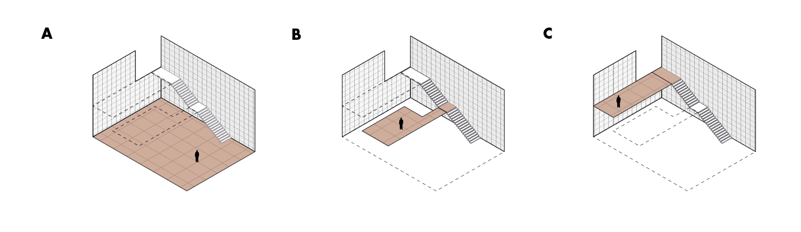

A Warm Wedge – Connecting Students and Knowledge Across Floors As a contribution to the competition “Warm Spaces” issued by Arkitektskolen Aarhus, “Levels of Stay” seeks to establish a hierarchy throughout the school’s monotone project rooms, which are of a “badminton court”-scale. Currently, these project rooms are used daily – either as a means of connection across floors and units or as a last resort when no other room is available for workshops.
This creates tension between passersby and ongoing workshops. Additionally, the school lacks warm spaces to occupy. Inspired by the existing wood library at the school and its niches, this project uses the same materiality to create warmth. This project suggests decreasing the “badminton court scale” present in the project rooms by subdividing them into three spatial atmospheres, each catering to different uses – A, B, and C.

The floors of Aarch are connected by the staircase, which creates temporary gathering spaces across levels and study units.

The three plateau allows for various divisions of the current projectrooms of Arkitektskolen Aarhus. Theirby it is possible to fully or partially transform the projectrooms.